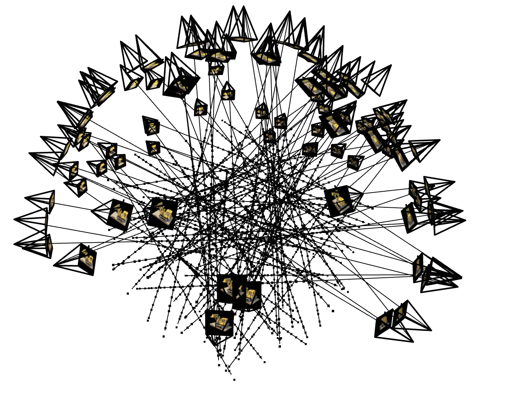

Part 2.1: Create Rays from Cameras
In this part, I implemented the functions transform(c2w, x_c), pixel_to_camera(K, uv, s), and pixel_to_ray(K, c2w, uv).
For all these functions, I ensured to maintain homogeneous coordinates and appropriately support batched coordinates using PyTorch.
transform(c2w, x_c) transforms a point from the camera space to the world space.
I simply multiplied the homogeneous version of x_c by c2w to retrieve x_w, which is the point in the world space.
pixel_to_camera(K, uv, s) converts a point from the pixel coordinate system into x_c, the camera space.
I multiplied the inverse of K by the homogeneous vector (u, v, 1), and then scaled the result by s.
Lastly, pixel_to_ray(K, c2w, uv) converts a point from pixel coordinates to a ray with origin and normalized direction.
I utilized pixel_to_camera to retrieve x_c, and transform to retrieve x_w.
Then, I calculated r_o by retrieving the translation component of c2w and r_d by subtracting r_o from x_w and then normalizing the result.
Part 2.2: Sampling
In this part, I wrote the functions sample_rays(N) and sample_along_rays(rays_o, rays_d, near, far, perturb, n_samples).
In sample_rays(N), I sampled M images and then sampled N // M rays from each image.
Using pixel_to_ray, I then calculated rays_o, rays_d and returned rays_o, rays_d, and the pixels that were sampled.
In sample_along_rays(rays_o, rays_d, near, far, perturb, n_samples), I created some samples along the ray and acquired the 3D coordiantes using rays_o and rays_d. If perturb is true, I added a small perturbation to the points.
Part 2.3: Putting the Dataloading All Together
In this part, I created a class RaysData to utilize as a dataloader for both NeRF training as well as visualizatoin.
It includes the functions sample_rays(N) and sample_along_rays(rays_o, rays_d, near, far, perturb, n_samples).
I then used these functions to visualize the rays and samples with cameras using Viser.

Rays and Samples with Cameras
Part 2.4: Neural Radiance Field
In this part, I created an MLP that takes in 3D world coordinates and injects the input after positional encoding into the middle of my MLP utilizing concatenation.
For the model architecture, I followed the structure given in the problem statement (image below).
I made sure to calculate the appropriate input dimensions when feeding in positional encodings and split the ending layers into density and rgb sections to generate the appropriate density and color of the 3D points.
In addition, I added these sequential layer variables to the init method of the model class.
I also created a forward method in the class where I calculated the positional encodings of the 3D world coordinates and 3D ray direction vector, and called the appropriate sequential layers to connect them to each other.
Part 2.5: Volume Rendering
In this part, I first implemented the volume rendering equation given a batch of samples along a ray.
Next, I implemented the training process for the NeRF model on the lego dataset.
I trained the model using the appropriate training images and camera poses, sampled rays for each iteration, evaluated the model, and then reconstructed the colors of the pixels using my volume rendering function.
I used 1000 iterations, 10000 rays, a learning rate of 5e-4, near=2.0, and far=6.0.
In addition, I plotted the predicted validation images across iterations and kept track of the PSNR and MSE loss per iteration.
For validation, I rendered all validation images and computed the average PSNR across them.
Using these metrics, I plotted the training loss curve, training PSNR curve, and validation PSNR curve.
Lastly, I generated a GIF of the spherical rendering of all of the Lego scene by rendering views from camera poses around the object.
Part 2.6: Training with Your Own Data
In this part, I utilized the custom dataset that I generated in part 0.4.
Using the same NeRF training pipeline from part 2.5, I trained a model on my own images using 3000 iterations, 10000 rays, a learning rate of 5e-4, near=0.05, and far=0.8.
The overall structure of the code is the same as in Part 2.5, with only modifications to the hyperparameters and dataset.
Finally, I generated a GIF of the spherical rendering of my entire Yoda scene by rendering views from camera poses around the object.